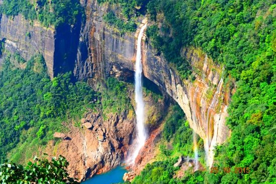
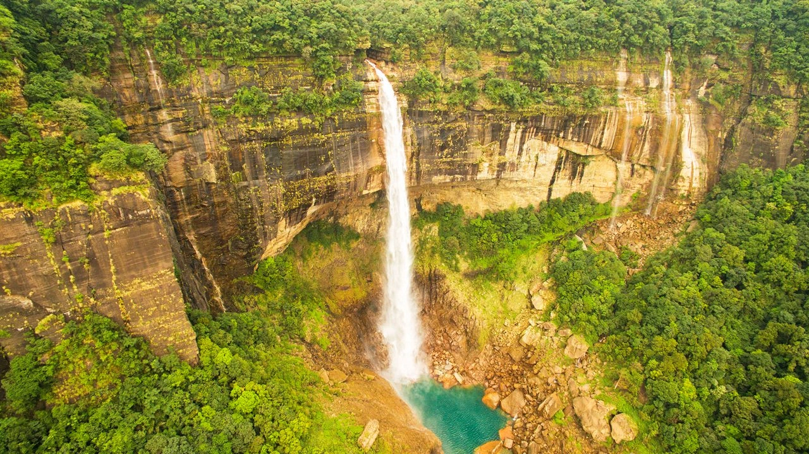

Nestled in the mist-covered hills of Meghalaya, Cherrapunji is one of the most breathtaking destinations in Northeast India. Famous for dramatic waterfalls, ancient caves, cloud-covered valleys, lush green landscapes, and the iconic living root bridges, Cherrapunji attracts nature lovers, couples, backpackers, photographers, and adventure seekers throughout the year. Locally known as Sohra, Cherrapunji is globally famous for receiving one of the highest rainfalls on Earth. During monsoon, the entire region transforms into a magical paradise where waterfalls roar down giant cliffs and clouds float across endless valleys. Whether you are planning a peaceful Meghalaya road trip, a honeymoon escape, a backpacking adventure, or a family vacation, Cherrapunji offers unforgettable experiences surrounded by raw natural beauty.
Cherrapunji, also called Sohra, has a rich cultural history deeply connected with the Khasi tribes of Meghalaya. During British rule, the region became an important administrative center because of its cool climate and strategic location in Northeast India. Over the years, Cherrapunji gained worldwide fame because of its extraordinary rainfall and unique ecological beauty. Even today, the region preserves its traditional Khasi culture, natural landscapes, and sustainable living practices while becoming one of India’s top travel destinations.
Nohkalikai Falls is one of the tallest plunge waterfalls in India and the most iconic attraction of Cherrapunji. The waterfall dramatically plunges from giant cliffs into a deep turquoise pool surrounded by lush green hills and misty valleys. The viewpoint becomes especially magical during monsoon season when heavy rainfall transforms the waterfall into a roaring natural spectacle.


Seven Sisters Falls is another spectacular waterfall where seven parallel streams flow beautifully down massive cliffs during monsoon. The waterfall creates one of the most scenic landscapes in Meghalaya.
The Double Decker Living Root Bridge is one of Meghalaya’s most famous natural wonders. Built naturally over decades by guiding tree roots across rivers, these bridges showcase the brilliant indigenous engineering of the Khasi tribes. The trek to the bridge passes through forests, villages, hanging bridges, waterfalls, and scenic valleys, making it one of the best adventure experiences in Meghalaya.


Mawsmai Cave is one of the most accessible limestone caves in Meghalaya. Famous for fascinating rock formations, underground pathways, and naturally carved limestone structures, the cave offers an exciting adventure experience. Walking through the illuminated cave surrounded by dripping rock formations feels mysterious and magical.
Wei Sawdong Falls is considered one of the hidden gems of Cherrapunji. Famous for crystal-clear blue water and multi-layered waterfalls, this destination offers breathtaking scenery for nature lovers and photographers.
Eco Park offers panoramic views of valleys, waterfalls, and cloud-covered mountains. During foggy weather, the landscapes become incredibly beautiful as clouds move through the green hills.
Located near Cherrapunji, Dawki is famous for the crystal-clear Umngot River where boats appear to float in the air because of the transparent water. Dawki and nearby Shnongpdeng are among the most scenic destinations in Meghalaya.
This is the most magical season in Cherrapunji when waterfalls become massive and the entire region turns deep green.
Winter offers pleasant weather, clear skies, and comfortable sightseeing conditions for travelers.
Summer remains cool and pleasant compared to most Indian cities, making Cherrapunji a refreshing getaway.
Meghalaya offers delicious Khasi cuisine and authentic Northeast Indian flavors. Popular dishes include:
Cherrapunji is well connected by road from Shillong and Guwahati. The Shillong to Cherrapunji road trip is one of the most scenic drives in Northeast India.
The nearest major railway station is Guwahati Railway Station in Assam.
The nearest airport is Shillong Airport, while Guwahati Airport offers better connectivity with major Indian cities.
Planning a Meghalaya trip becomes smooth and memorable with Wander & Wonder Travels. Our carefully designed Meghalaya tour packages cover Shillong, Cherrapunji, Dawki, Mawlynnong, and other breathtaking destinations of Northeast India.
Why Choose Wander & Wonder Travels?
The best time to visit Cherrapunji is October to May for clear weather. Monsoon (June–September) is best for waterfalls and lush greenery.
A 2–3 day trip is ideal to explore waterfalls, caves, living root bridges, and nearby Dawki & Shillong.
Yes, Cherrapunji is very safe for families, couples, and solo travelers. The local Khasi community is welcoming and friendly.
Nohkalikai Falls, Seven Sisters Falls, Mawsmai Cave, Double Decker Living Root Bridge, Wei Sawdong Falls, and Eco Park are top attractions.
Yes, Dawki is about 2.5–3.5 hours away and is usually included in Meghalaya tour itineraries.
Carry raincoat, warm clothes, trekking shoes, umbrella, and waterproof bags especially during monsoon season.
If you dream of exploring waterfalls, caves, valleys, rivers, and cloud-covered landscapes of Meghalaya, Wander & Wonder Travels is your ideal travel partner for unforgettable Northeast adventures.
Explore Meghalaya Packages →